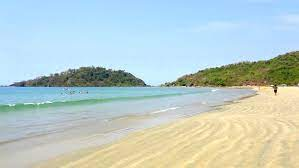

My Favorite Place

Goa
Goa is also known for its beaches, ranging from popular stretches at Baga and Palolem to those in laid-back fishing villages such as Agonda.
Goa is a state in western India with coastlines stretching along the Arabian Sea. Its long history as a Portuguese colony prior to 1961 is evident in its preserved 17th-century churches and the area’s tropical spice plantations.
Vagator : It is a popular beach dominated by Chapora Fort to the north.
To the south of Vagator is Calangute beach. Arambol Beach : A unique beach in the North of Goa, it is simultaneously rocky and sandy along the beach and much after for its serenity.